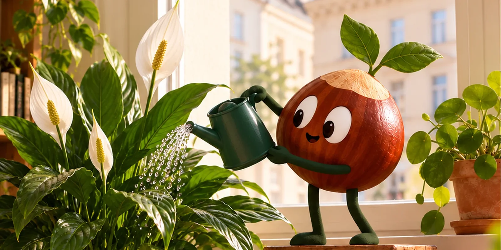
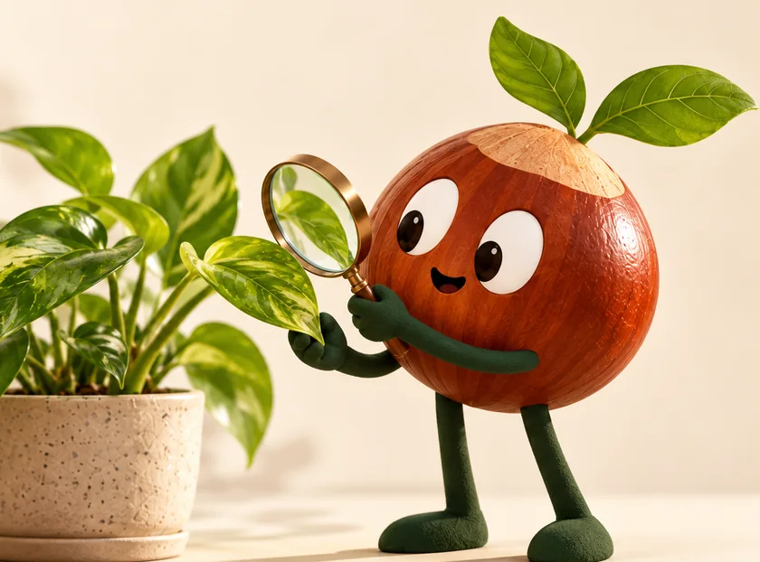

30.000 lx
Gewächshaus
wo viele Pflanzen aufwachsen
Gelbe Blätter, keine Blüten oder eine Pflanze, die plötzlich schlappmacht? Schicken Sie uns ein Foto. Wir schauen kostenlos drauf.


Keine App, die irgendetwas verspricht. Sie schreiben uns — und wir schauen uns Ihr Pflanzenproblem an.
Foto der Pflanze an hallo@kastanie.wien senden
Dazuschreiben, wo sie steht und wie Sie gießen
Kostenlose Einschätzung innerhalb von 48 Stunden (werktags)
Oder schreiben Sie direkt an hallo@kastanie.wien
Foto als Anhang hinzufügen. Funktioniert der E-Mail-Link nicht, bitte die Adresse kopieren.
Bitte ein Foto pro Anfrage. Wenn wir etwas nicht sicher beurteilen können, sagen wir das offen.
Was im Gewächshaus bestens wächst, steht zuhause manchmal viel dunkler. Hier ein Beispiel, wie stark das Licht abnehmen kann:
wo viele Pflanzen aufwachsen
direkt bei Ihnen zuhause
tiefer im Raum
z. B. Regal oder Kommode
Beispielwerte, keine festen Sollwerte. Jahreszeit, Ausrichtung und Fenstergröße verändern die tatsächlichen Lux-Werte.
Mehr über mögliche Ursachen erfahren ↓Die kostenlosen Foto-Antworten gibt es schon jetzt. Besuche zuhause sind noch in Planung. Hinterlassen Sie Ihren Bezirk — wir melden uns einmal, wenn es losgeht.
Eine Start-Nachricht. Kein Newsletter. Keine Werbung.
Melden Sie sich direkt über das kurze Formular an. Ihr Bezirk hilft uns zu sehen, wo in Wien Bedarf besteht.
Formular in einem neuen Tab öffnen ↗
Die Anmeldung wird von Zoho Forms verarbeitet. Datenschutzerklärung.
Die direkte Online-Anmeldung wird gerade eingerichtet. Bis dahin können Sie uns Ihre Anmeldung per E-Mail senden.
Unser Auge gleicht große Helligkeitsunterschiede aus. Pflanzen nicht. Schon etwas mehr Nähe zum Fenster kann helfen.
Pflanzen werden für den Verkauf oft bei optimalem Licht und guter Pflege kultiviert. Zuhause fehlen diese Bedingungen manchmal.
Warme, trockene Winterluft setzt empfindlichen Zimmerpflanzen zu. Abstand zur Heizung kann sinnvoll sein.
Weniger Wachstum bedeutet oft auch weniger Wasserbedarf. Prüfen Sie die Erde, statt nur nach Kalender zu gießen.
Ein Foto genügt, um anzufangen.